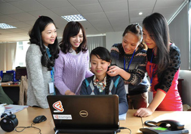
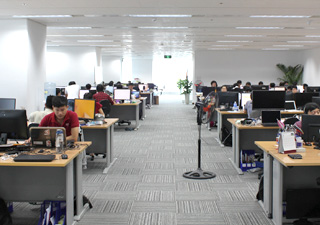
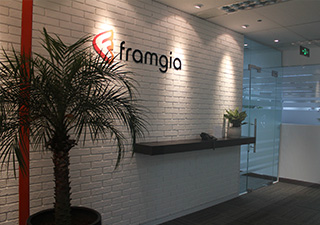

大手企業から成長性高いベンチャーまで、幅広くソリューションを提供
ベトナム国内最高層ビルにオフィスを構えています
- 
- 
- 
NEWS
- 2015.08.18
- 開発事例に「一体感を感じさせてくれるラボ開発」株式会社つみき様を掲載しました。
- 2015.08.07
- 開発事例に「アジアで優秀な人材のチームを作る」株式会社ベーシック様を掲載しました。
- 2015.04.03
- アジアで展開するプログラマ向け技術情報共有サービス「Viblo」をリリースしました。
- 2015.01.05
- フランジア・ジャパンオフィス移転のお知らせ
- 2014.09.04
- Ruby Conference 2014にて弊社CTOの本間が登壇いたします。
- 2014.09.01
- 開発事例に「ピースオブケイクが切り開くコンテンツの未来」を掲載しました。
- 2014.05.28
- 日越同時オフィス移転のお知らせ
- 2014.05.07
- 開発事例に「世界一の経済メディアを目指す」株式会社ユーザベース様を掲載しました。
- 2014.02.25
- 開発事例に「comnico Marketing Suite」を掲載しました。
- 2014.01.22
- サイバーエージェント社とハノイ工科大学でTechCampイベントを行いました！！